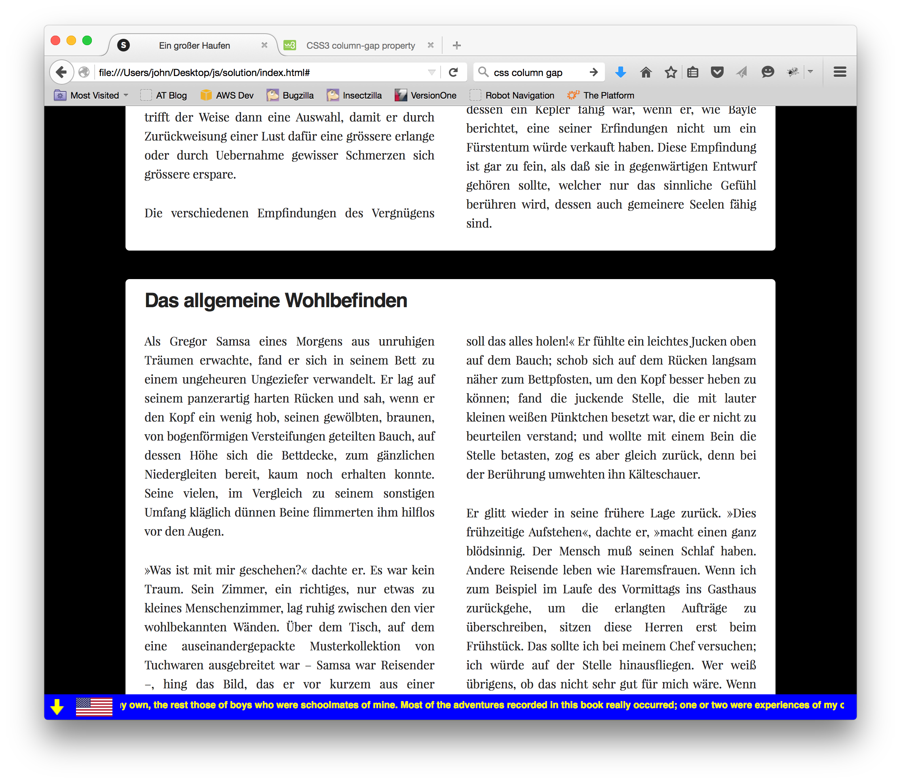

Take the existing site and a news ticker to the bottom of the page. The ticker should satisfy the following requirements:
It should be 32 pixels high, and in a fixed position at the bottom of the page, so that it is always visible regardless of how the page content is scrolled.
The content within the scroller should come from the 'content' property of the test data item for the currently-displayed language.
Clicking the down arrow (image in the 'images' subdirectory) cycles incrementally through the language-specific entries in the test data.
The flag displayed next to the down arrow should correspond to the currently-selected language.
The text should scroll at the rate of one pixel every 25 ms.
The displayed text should wrap seamlessly as shown in the screen shot below.
You may use frameworks or libraries to assist in manipulating the DOM, but you may not use the <marquee> tag or employ a canned ticker plugin.
Do not worry about styling the ticker to match exactly what is shown in the screenshot; just focus on the basic functionality.

Tiefe Gedanken
Damit Ihr indess erkennt, woher dieser ganze Irrthum gekommen ist, und weshalb man die Lust anklagt und den Schmerz lobet, so will ich Euch Alles er?ffnen und auseinander setzen, was jener Begründer der Wahrheit und gleichsam Baumeister des glücklichen Lebens selbst darüber gesagt hat. Niemand, sagt er, verschm?he, oder hasse, oder fliehe die Lust als solche, sondern weil grosse Schmerzen ihr folgen, wenn man nicht mit Vernunft ihr nachzugehen verstehe. Ebenso werde der Schmerz als solcher von Niemand geliebt, gesucht und verlangt, sondern weil mitunter solche Zeiten eintreten, dass man mittelst Arbeiten und Schmerzen eine grosse Lust sich zu verschaften suchen müsse. Um hier gleich bei dem Einfachsten stehen zu bleiben, so würde Niemand von uns anstrengende k?rperliche Uebungen vornehmen, wenn er nicht einen Vortheil davon erwartete. Wer dürfte aber wohl Den tadeln, der nach einer Lust verlangt, welcher keine Unannehmlichkeit folgt, oder der einem Schmerze ausweicht, aus dem keine Lust hervorgeht?
Sehr tiefe Denken.
Dagegen tadelt und hasst man mit Recht Den, welcher sich durch die Lockungen einer gegenw?rtigen Lust erweichen und verführen l?sst, ohne in seiner blinden Begierde zu sehen, welche Schmerzen und Unannehmlichkeiten seiner deshalb warten. Gleiche Schuld treffe Die, welche aus geistiger Schw?che, d.h. um der Arbeit und dem Schmerze zu entgehen, ihre Pflichten verabs?umen. Man kann hier leicht und schnell den richtigen Unterschied treffen; zu einer ruhigen Zeit, wo die Wahl der Entscheidung v?llig frei ist und nichts hindert, das zu thun, was den Meisten gef?llt, hat man jede Lust zu erfassen und jeden Schmerz abzuhalten; aber zu Zeiten trifft es sich in Folge von schuldigen Pflichten oder von sachlicher Noth, dass man die Lust zurückweisen und Beschwerden nicht von sich weisen darf. Deshalb trifft der Weise dann eine Auswahl, damit er durch Zurückweisung einer Lust dafür eine gr?ssere erlange oder durch Uebernahme gewisser Schmerzen sich gr?ssere erspare.
Die verschiedenen Empfindungen des Vergnügens oder des Verdrusses beruhen nicht so sehr auf der Beschaffenheit der ?u?eren Dinge, die sie erregen, als auf dem jedem Menschen eigenen Gefühle, dadurch mit Lust oder Unlust gerührt zu werden. Daher kommen die Freuden einiger Menschen, woran andre einen Ekel haben, die verliebte Leidenschaft, die ?fters jedermann ein R?tsel ist, oder auch der lebhafte Widerwille, den der eine woran empfindet, was dem andern v?llig gleichgültig ist. Das Feld der Beobachtungen dieser Besonderheiten der menschlichen Natur erstreckt sich sehr weit und verbirgt annoch einen reichen Vorrat zu Entdeckungen, die ebenso anmutig als lehrreich sind. Ich werfe für jetzt meinen Blick nur auf einige Stellen, die sich in diesem Bezirke besonders auszunehmen scheinen, und auch auf diese mehr das Auge eines Beobachters als des Philosophen.
Weil ein Mensch sich nur insofern glücklich findet, als er eine Neigung befriedigt, so ist das Gefühl, welches ihn f?hig macht, gro?e Vergnügen zu genie?en, ohne dazu ausnehmende Talente zu bedürfen, gewi? nicht eine Kleinigkeit. Wohlbeleibte Personen, deren geistreichster Autor ihr Koch ist und deren Werke von feinem Geschmack sich in ihrem Keller befinden, werden bei gemeinen Zoten und einem plumpen Scherz in ebenso lebhafte Freude geraten, als diejenige ist, worauf Personen in edeler Empfindung so stolz tun. Ein bequemer Mann, der die Vorlesung der
Bücher liebt, weil es sich sehr wohl dabei einschlafen l??t, der Kaufmann, dem alle Vergnügen l?ppisch scheinen, dasjenige ausgenommen, was ein kluger Mann genie?t, wenn er seinen Handlungsvorteil überschl?gt, derjenige, der das andre Geschlecht nur insofern liebt, als er es zu den genie?baren Sachen z?hlt, der Liebhaber der Jagd, er mag nun Fliegen jagen, wie Domitian, oder wilde Tiere, wie A . ., alle diese haben ein Gefühl, welches sie f?hig macht, Vergnügen nach ihrer Art zu genie?en, ohne da? sie andere beneiden dürfen oder auch von andern sich einen Begriff machen k?nnen; allein ich wende für jetzt darauf keine Aufmerksamkeit. Es gibt noch ein Gefühl von feinerer Art, welches entweder darum so genannt wird, weil man es l?nger ohne S?ttigung und Ersch?pfung genie?en kann, oder weil es sozusagen eine Reizbarkeit der Seele voraussetzt, die diese zugleich zu tugendhaften Regungen geschickt macht, oder weil es Talente und Verstandesvorzüge anzeigt, da im Gegenteil jene bei v?lliger Gedankenlosigkeit stattfinden k?nnen. Dieses Gefühl ist es, wovon ich eine Seite betrachten will. Doch schlie?e ich hievon die Neigung aus, welche auf hohe Verstandeseinsichten geheftet ist, und den Reiz, dessen ein Kepler f?hig war, wenn er, wie Bayle berichtet, eine seiner Erfindungen nicht um ein Fürstentum würde verkauft haben. Diese Empfindung ist gar zu fein, als da? sie in gegenw?rtigen Entwurf geh?ren sollte, welcher nur das sinnliche Gefühl berühren wird, dessen auch gemeinere Seelen f?hig sind.
Das allgemeine Wohlbefinden
Als Gregor Samsa eines Morgens aus unruhigen Tr?umen erwachte, fand er sich in seinem Bett zu einem ungeheuren Ungeziefer verwandelt. Er lag auf seinem panzerartig harten Rücken und sah, wenn er den Kopf ein wenig hob, seinen gew?lbten, braunen, von bogenf?rmigen Versteifungen geteilten Bauch, auf dessen H?he sich die Bettdecke, zum g?nzlichen Niedergleiten bereit, kaum noch erhalten konnte. Seine vielen, im Vergleich zu seinem sonstigen Umfang kl?glich dünnen Beine flimmerten ihm hilflos vor den Augen.
?Was ist mit mir geschehen?? dachte er. Es war kein Traum. Sein Zimmer, ein richtiges, nur etwas zu kleines Menschenzimmer, lag ruhig zwischen den vier wohlbekannten W?nden. ?ber dem Tisch, auf dem eine auseinandergepackte Musterkollektion von Tuchwaren ausgebreitet war – Samsa war Reisender –, hing das Bild, das er vor kurzem aus einer illustrierten Zeitschrift ausgeschnitten und in einem hübschen, vergoldeten Rahmen untergebracht hatte. Es stellte eine Dame dar, die, mit einem Pelzhut und einer Pelzboa versehen, aufrecht dasa? und einen schweren Pelzmuff, in dem ihr ganzer Unterarm verschwunden war, dem Beschauer entgegenhob.
Gregors Blick richtete sich dann zum Fenster, und das trübe Wetter – man h?rte Regentropfen auf das Fensterblech aufschlagen – machte ihn ganz melancholisch. ?Wie w?re es, wenn ich noch ein wenig weiterschliefe
und alle Narrheiten verg??e,? dachte er, aber das war g?nzlich undurchführbar, denn er war gew?hnt, auf der rechten Seite zu schlafen, konnte sich aber in seinem gegenw?rtigen Zustand nicht in diese Lage bringen. Mit welcher Kraft er sich auch auf die rechte Seite warf, immer wieder schaukelte er in die Rückenlage zurück. Er versuchte es wohl hundertmal, schlo? die Augen, um die zappelnden Beine nicht sehen zu müssen, und lie? erst ab, als er in der Seite einen noch nie gefühlten, leichten, dumpfen Schmerz zu fühlen begann.
?Ach Gott,? dachte er, ?was für einen anstrengenden Beruf habe ich gew?hlt! Tag aus, Tag ein auf der Reise. Die gesch?ftlichen Aufregungen sind viel gr??er, als im eigentlichen Gesch?ft zu Hause, und au?erdem ist mir noch diese Plage des Reisens auferlegt, die Sorgen um die Zuganschlüsse, das unregelm??ige, schlechte Essen, ein immer wechselnder, nie andauernder, nie herzlich werdender menschlicher Verkehr. Der Teufel soll das alles holen!? Er fühlte ein leichtes Jucken oben auf dem Bauch; schob sich auf dem Rücken langsam n?her zum Bettpfosten, um den Kopf besser heben zu k?nnen; fand die juckende Stelle, die mit lauter kleinen wei?en Pünktchen besetzt war, die er nicht zu beurteilen verstand; und wollte mit einem Bein die Stelle betasten, zog es aber gleich zurück, denn bei der Berührung umwehten ihn K?lteschauer.
Er glitt wieder in seine frühere Lage zurück. ?Dies frühzeitige Aufstehen?, dachte er, ?macht einen ganz bl?dsinnig. Der Mensch mu? seinen Schlaf haben. Andere Reisende leben wie Haremsfrauen. Wenn ich zum Beispiel im Laufe des Vormittags ins Gasthaus zurückgehe, um die erlangten Auftr?ge zu überschreiben, sitzen diese Herren erst beim Frühstück. Das sollte
ich bei meinem Chef versuchen; ich würde auf der Stelle hinausfliegen. Wer wei? übrigens, ob das nicht sehr gut für mich w?re. Wenn ich mich nicht wegen meiner Eltern zurückhielte, ich h?tte l?ngst gekündigt, ich w?re vor den Chef hingetreten und h?tte ihm meine Meinung von Grund des Herzens aus gesagt. Vom Pult h?tte er fallen müssen! Es ist auch eine sonderbare Art, sich auf das Pult zu setzen und von der H?he herab mit dem Angestellten zu reden, der überdies wegen der Schwerh?rigkeit des Chefs ganz nahe herantreten mu?. Nun, die Hoffnung ist noch nicht g?nzlich aufgegeben, habe ich einmal das Geld beisammen, um die Schuld der Eltern an ihn abzuzahlen – es dürfte noch fünf bis sechs Jahre dauern –, mache ich die Sache unbedingt. Dann wird der gro?e Schnitt gemacht. Vorl?ufig allerdings mu? ich aufstehen, denn mein Zug f?hrt um fünf.?